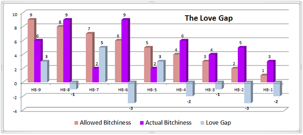

< < < Back
How To Make A Man Fall In Love With You – Return Of Kings
It seems I can’t get through two consecutive days anymore without hearing women talk about their relationships or the lack thereof. I’m encouraged when I hear women talking about their boyfriends or husbands in a positive manner, and saddened when I see lovely young women lamenting a stagnant or unfulfilling relationship in which their needs are not met. That’s why I’ve decided to forgo my usual male-centric article and offer a little insight for our female readership instead.
This one is for the ladies.
It has come to my attention that a small minority of intelligent, successful, beautiful and altogether lovely women still struggle with finding a man who is interested in commitment. Of course it’s easy for a woman to get dates or short-term relationships based on superficial elements such as excitement or sexual compatibility, but finding love and commitment – assuming you’ve decided the time is right for you – can often be a daunting task.
Can you really make a man fall in love with you? While the question itself raises ethical and moral concerns, the answer is yes. Most men – from the nice guy to the bad boy player – are open to love and commitment when they meet the right woman. The key to success is creating an environment where love can form and evolve into commitment. When you make that happen, he almost can’t help himself.
Let’s start with the easy stuff; the things you’ve heard comedians, coworkers, male family members, guy friends, and even other women say. This certainly isn’t news, but it’s the foundation for where we’re going in learning how to create an environment in which a man’s love will spark and commitment will grow.
1. Your level of attractiveness dictates the maximum level of bitchiness you can display and still sustain a relationship.

This graph depicts the level of bitchiness on the Y axis, and the level of attractiveness on the X axis. For example, if you’re a Hot Babe-6, then you can afford to crank up the level of bitchiness to a 6. Any more than that and you’ll be back out in the dating market in a few months.
But how is something so subjective like attractiveness defined? What constitutes bitchiness? I could give you my opinion, but you’d be better off asking the man you’re trying to attract because his definition matters far more than mine. And quite frankly, if gaining a man’s commitment and love is your goal, then your definition of attractiveness and bitchiness doesn’t really matter either.
There’s a flipside to this as well wherein his opinion of himself is trumped by your opinion of him. It’s a balanced and equitable approach to mate-vetting, and one should be careful not to set the relationship up for failure by shaming the other partner into espousing a particular view not fundamentally his own. Avoid shaming language like “A real man would…” or “You should man up and…” because only a weak man responds to that, and you’ll end up hating him for it later without even knowing why.
2. The high-value man you’re trying to attract is keenly aware of your maximum sustainable level of bitchiness versus your actual real-life level of bitchiness.
This is just an example of how attractiveness and bitchiness ratios can be in line or get out of hand across a wide spectrum of women.
3. The gap between your attractiveness level and how bitchy you are is Cupid’s workshop.
A positive gap is the only space in the relationship universe where love can germinate and evolve into long-term commitment. The bigger the space, the more quality men you’ll have to choose from.

Take a look at the chart above and focus on Hot Babe-7. The HB-7, HB-9 and HB-5 all have positive gaps between their attractiveness and bitchiness levels which will attract men and keep them interested. The superstar here of course is the HB-7. She’s the woman every man wants – attractive and easy to get along with. In fact, when it comes to finding love and commitment, she’ll easily outperform the two girls who are more attractive than her.
In this example, the HB-9 may make a good trophy wife. The HB-8 is slightly more trouble than she’s worth, but she’s still attractive enough to secure more short-term interest than she can handle. The HB-6 is the typical American girl and is seen by most men with options as a pump-and-dump candidate. She’ll end up getting banged senseless by dozens of men who wouldn’t wife her up if their lives depended on it, then she’ll shower off the sticky residue and find some schlep to torment in marital hell.
The HB-2 is probably a fat chick with a chip on her shoulder that she won’t recognize as metaphorical until she tries to eat it, and the HB-1 is most likely a feminist college student with hairy armpits, acne scars, and a boyfriend who everyone keeps mistaking for her sister.
4. Know the difference between how men with options assess casual relationships versus how they assess commitment.
That’s pretty much the entire thought process a man goes through when he hooks up. However, that same man will take a completely different approach when he assesses commitment.
Far more involved than the “yes or no” approach to casual sex and dating, the assessment men conduct before commitment is serious business. If you really want to know how to make a man fall in love with you, here it is. Create Cupid’s workspace. Maintain a gap between your attractiveness level and how much of a pain in the ass you are. It’s a simple concept, but it’ll work.
Here are a few additional tips that may help you along your journey toward locking down Mr. Perfect:
I. You can’t fake it. You cannot increase your level of attractiveness by touting qualities you think men should be attracted to.
II. Learn the difference between respect and attraction. Men are not attracted to your education or your professional resume. We respect the level of intelligence and hard work it took for you to earn that Wharton MBA and become an account executive at an advertising agency all by yourself like a big girl, but this does not equate to attraction in any way.
III. Refrain from “Excluded Middle” thinking. Just because a man does not find your education or professional resume attractive does not mean that he finds it unattractive. Don’t assume he’s intimidated by your success – assume there’s an attraction deficit or a bitchiness surplus that your degree or job title simply cannot balance.
IV. Shoot for two down and ten up. Find a man who is two points less attractive than you and 10 years older. As you age, you’ll become less and less attractive while his social status and earning power increases which will make him more attractive to women. By shooting two down and ten up, you’ll always be the apple of his eye if you stay in shape and lower your bitchiness ratio as your attractiveness declines.
V. Don’t get pissed when the chickens come home to roost. Remember how sexually liberated you were during and right after college? Well, that 34 year old man you’re hoping to lock down is working in a position of power around a lot of young 20’s girls who are every bit as adventurous as you were at that age. You’ve already noticed that he’s not nearly as eager to settle down as you are, so you may have to reduce your bitchiness level to an all-time low in order to keep his attention from turning to the women who are younger, more attractive, less demanding of commitment, less expensive, more eager to please, and much easier to satisfy than you are.
Good luck, Godspeed, and don’t forget to send me an invitation to the wedding.
Read Next: 5 Signs You Should Marry Her


{kind=link}
{kind=link}
{kind=link}
{kind=link}